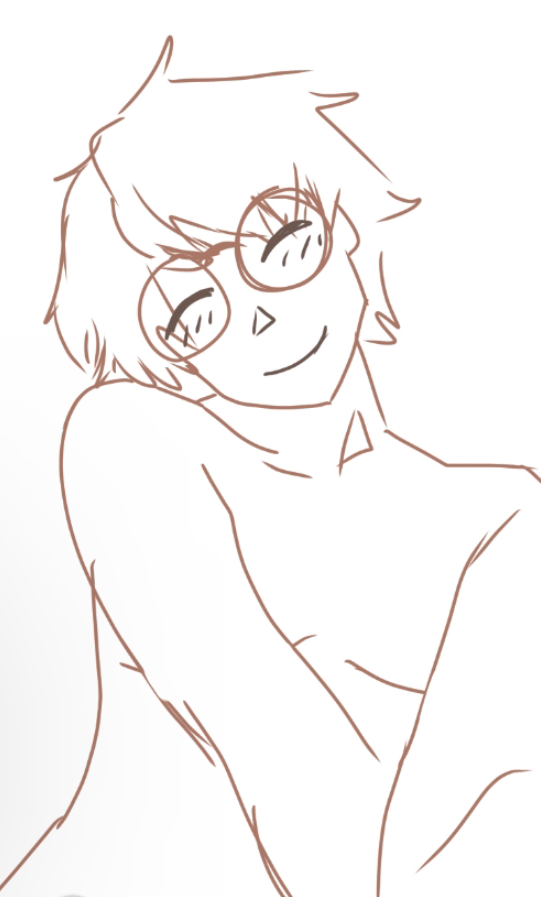
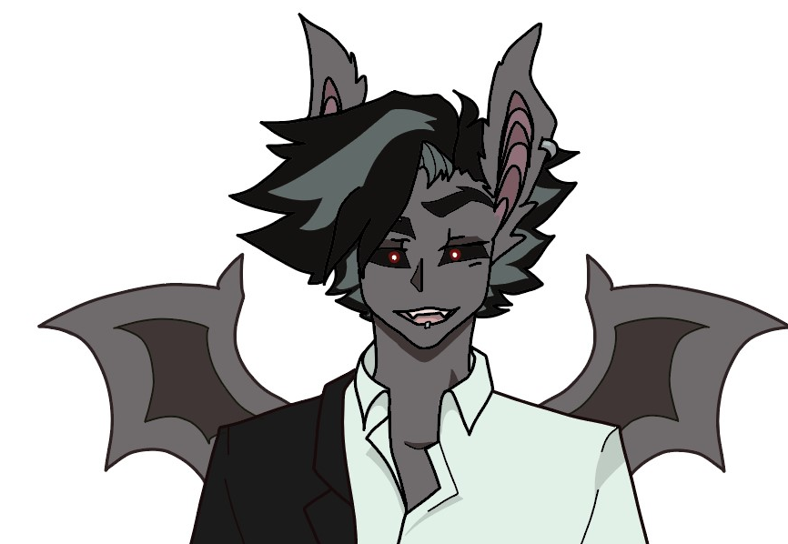
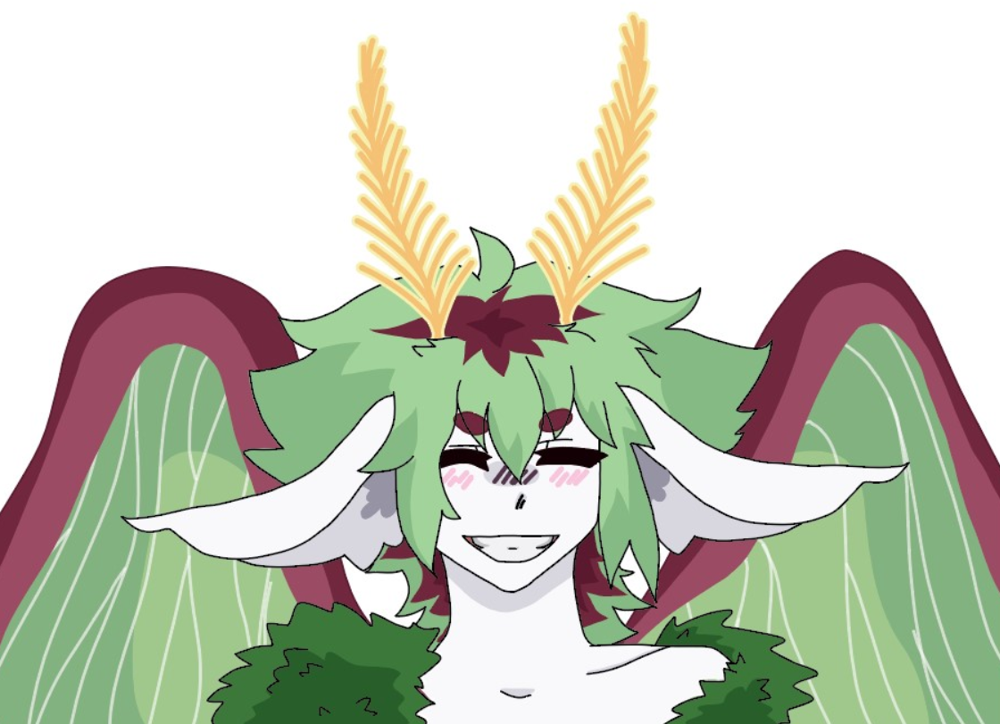
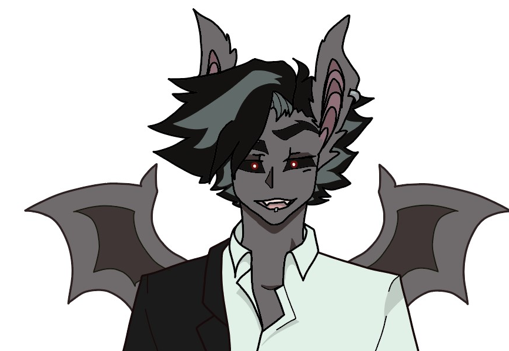
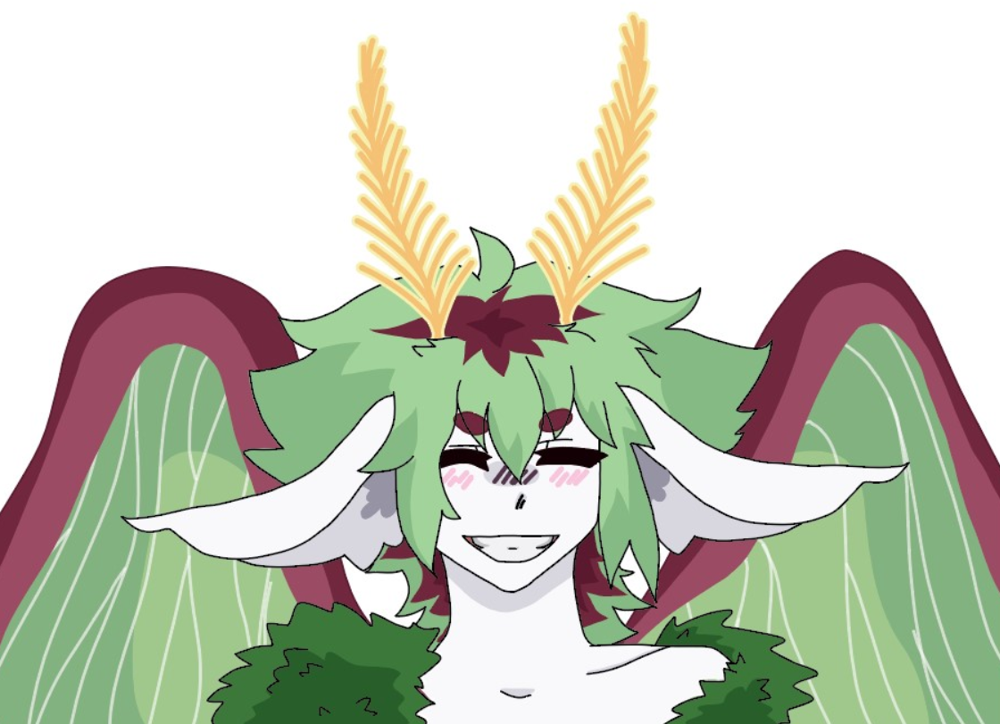
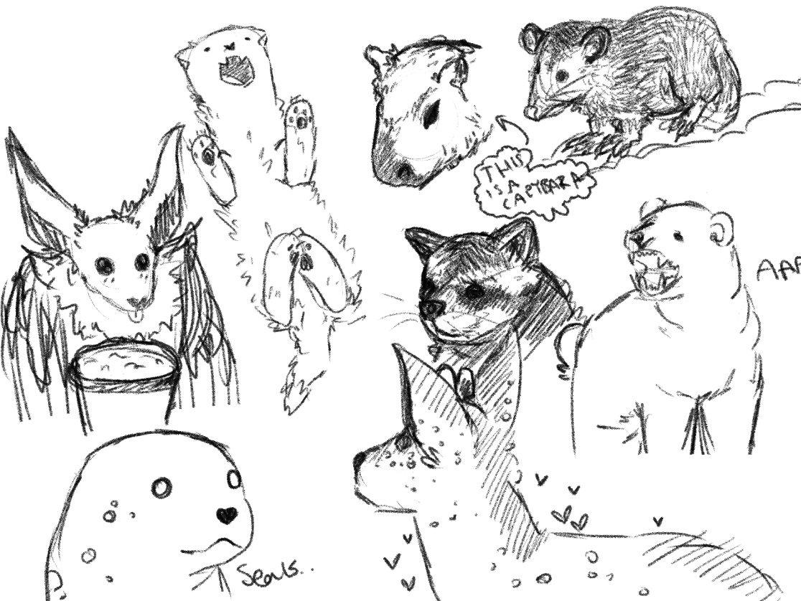
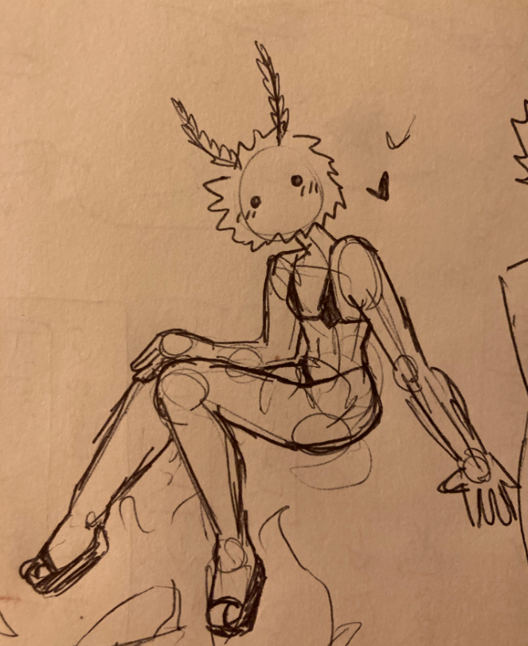
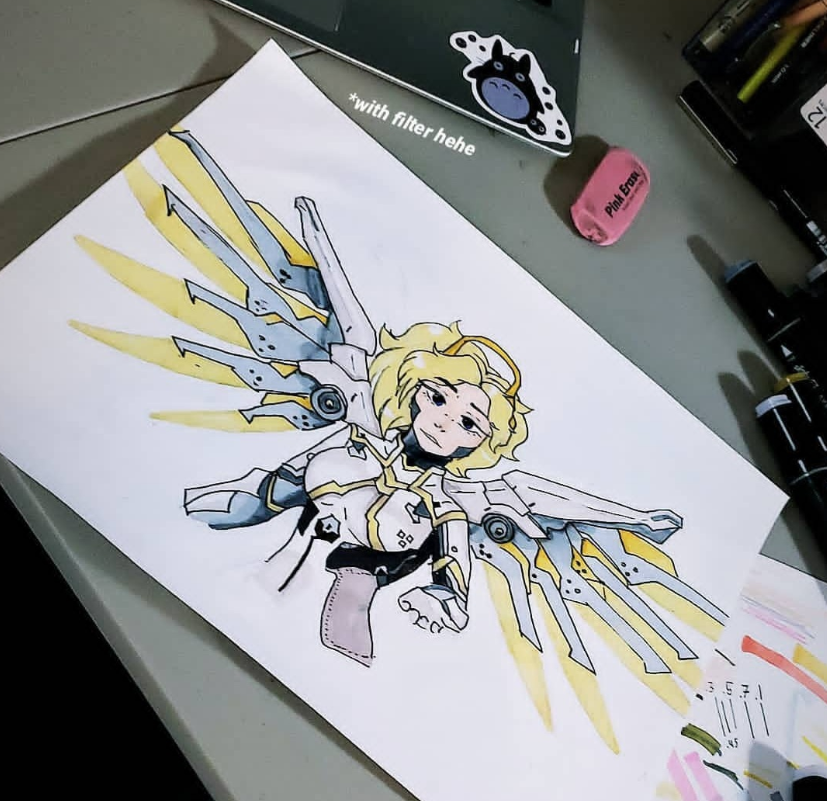
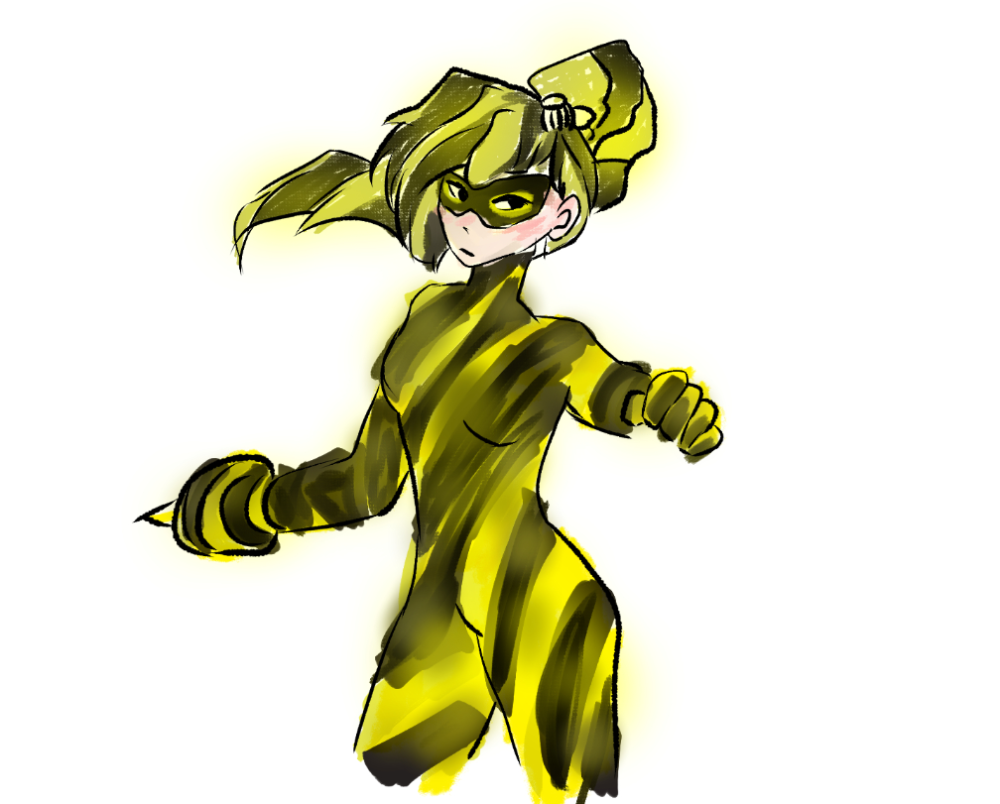
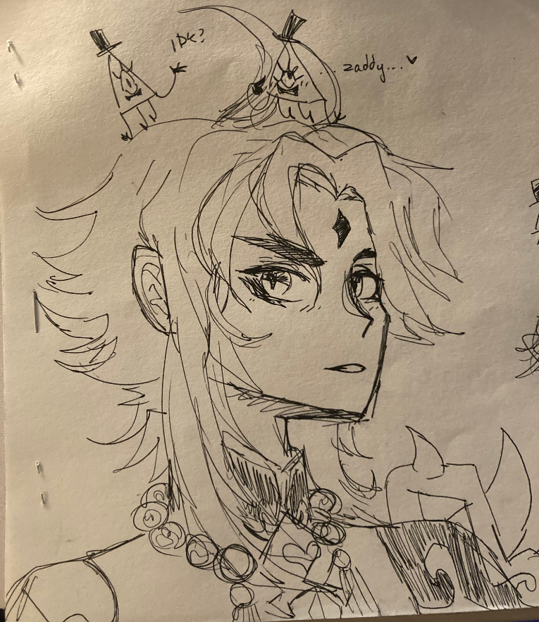

About Canyon and Their Identity

Artist Identity
Art has been with me ever since I was a child. I did my very first piece in fourth grade, which was a watercolored painting of a robin. I remember finishing it and being stunned by how it actually looked good. I loved the feeling of pride and joy when I looked at that bird, which still hangs in my mom's house today. Ever since then I continued to create, and now I find myself at UMT studying all differant kinds of art, art history, media arts, paintings, drawings, ceramics, charcoal work, etc. Below, I will list my most recent works.
Character Design for Magna Ruina
-
Magna ruina is my 'in the works' video game idea. It will hopefully develop into a cute dating sim with all of my characters, revoling around a tense plotline. I adore my characters and I really hope this dream of mine, to have my own game produced, comes true.

 





Comfort Art/ Silly Art
-
In fine arts, people in the program know me for painting the most weird and rediculous things. I like drawing and painting animals and other things that can just be naturally funny to look at. Here are some examples of what I mean.




Media-Inspired Art
-
I feel we are all effected by the media in one way or another, but I know for sure it affects my art, as well as my inspiration to create more. These artworks below are inspired by several differant sources, genshin impact, overwatch, and MLB.



Personal Identity

I have identified as nonbinary for around 4 years now. My pronouns are they/them/theirs, and I prefer gender nutreal terms and compliments. It took me a while to come to terms witht this part of my identity. Gender was something I never looked into, not until highschool. Growing up, I truly believed everyone felt uncomfortable being put in a binary; "boy" and "girl" both felt equally uncomfortable and wrong for me. But because I never knew there was a way to exsist outside of that binary, I coped, and just decided to be uncomfortable. It was all I knew. I am extremely lucky and grateful to have such a supporting, educating, and inclusive enviroment now, and when I was just beginning to dip my toes into this new chapter in my life. I changed my old name to Canyon, based on this cool adventure time character.

I surrounded myself with other nonbinary people and felt seen. I learned more and more about gender, sexuality, my sexuality, and even have had opportunites to spread that knowledge to other people who needed it. I began taking hormone therapy 50 weeks ago today, and have noticed signifigant changes in my voice that makes me feel extremly euphoric. I'm also getting gender-affirming top surgery March 15th, and could not be happier about it. I am extremley happy with my transition and my new gender identity. Experiencing my true self in college has had its ups and downs, but I am such a happier, more true version of myself now.

thanks for reading!